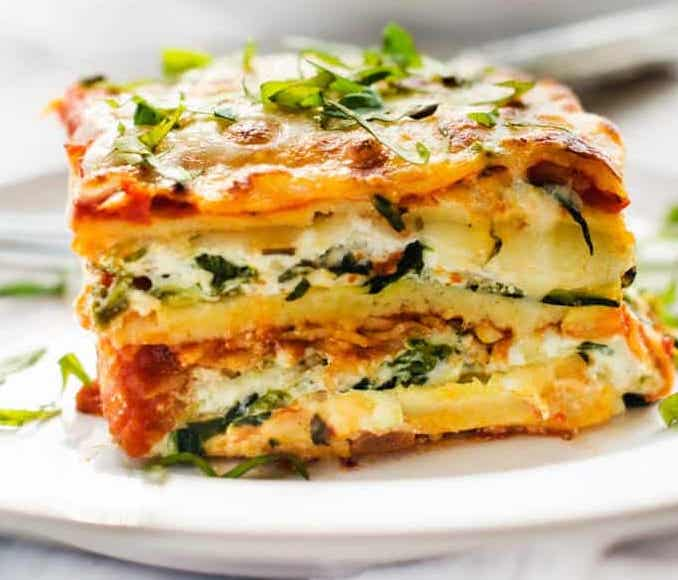

Home
Vegetarian Lasanga!

Vegetable Lasagna is what you make when you want to load up on veggies with something that’s filling
This incredible Vegetarian Lasagna is made with a creamy ricotta and spinach filling as well as layers of roasted vegetables and a homemade tomato lasagna sauce. It’s one of my favourite fridge clean out recipes because it can be made with just about any roastable veggies!
Serves 8-12 people
25 min prep time
50 min cook time
Total 1hr 15 mins
Ingredients
Roasted Vegetables
- 500 g / 1 lb pumpkin , 2cm/4/5" cubes
- 2 large zucchinis , cut into 2cm / 4/5" chunks
- 2 onions (any type) , cut into wedges
- 2 tbsp olive oil
- 1 Garlic glove minced
- Salt & Pepper
Spinach Ricotta
- 250 g / 8 oz frozen chopped spinach , thawed
- 500 g / 1 lb ricotta (Note 2)
- 1/2 cup / 50 g grated parmesan (or 3/4 cup shredded cheese)
- 1 egg
- 1 garlic clove , minced
- 1/8 tsp grated nutmeg, optional (fresh or powder)
- 1/2 tsp each Salt and pepper
Sauce
1 tbsp olive oil
1 garlic clove
1 small onion , finely chopped (any, I use brown)
700 g / 24 oz tomato passata
400 g / 14 oz crushed tomato
1/2 cup / 125 ml water
3/4 tsp each dried thyme and oregano (or basil, parsley)
1/2 tsp dried chilli flakes (can omit / adjust to taste)
Salt & Pepper
Lasagna
330g / 11 oz jar roasted red pepper strips, drained
375 g / 13 oz fresh lasagne sheets
300 g / 3 cups shredded mozzarella (or MORE!)
Instructions
Roasted Vegetables
- Preheat oven to 200C/390F
- Place vegetables on the tray, drizzle with oil, sprinkle with garlic, salt and pepper, Toss
- Roast for 25 minutes, turning at 15 minutes, until tender and browned
- Remove from oven, loosen from tray with spatula while warm (can stick when cools)
Sauce
- Heat oil in a skillet over medium high heat. Add garlic and onion, cook for 3 minutes until golden
- Add passata, crushed tomato, water, dried herbs, chilli, salt and pepper. Stir. Simmer on medium low heat for 20 minutes. Adjust salt at the end. *Add a teeny touch of sugar if it's a bit sour, depends on quality of tomatoes used
- Remove from stove and let cool for 5 minutes before using
Ricotta Mixture
- Place ingredients in a bowl and mix until combined
Lasagna
- Preheat oven to 160C/320F.
- Spread a ladle of tomato sauce on the base of a large baking dish
- Cover with lasagna sheets, tearing as required to fit
- Top with roasted vegetables, scatter over red peppers. Spoon over 2 1/2 cups of Sauce, then sprinkle with half the cheese
- Cover with lasagna sheets. Spread over Ricotta mixture
- Cover with lasagna sheets. Pour over remaining sauce and sprinkle with remaining cheese
- Bake for 25 - 30 minutes or until the cheese is golden. If using dried lasagna sheets, stick a knife in the middle to ensure it's cooked - if it needs longer, cover and stick it back in the oven
- Rest for 5 minutes before cutting and serving. Store leftovers per notes - brilliant reheated!
Reciepe Notes
- Veggies-feel free to use any vegetables you want, just cut them so they roast in around 20 to 25 minutes. Cauliflower, broccoli, carrots, squash are some I've used in the past.
- Ricotta-It's best to get ricotta over the counter at the deli, even at supermarkets, rather than buying in tubs unless it's a brand you know is good like Paesanella. Harris Farms brand ricotta is also good. I find ricotta in tubs at supermarkets is typically grainy and kind of powdery - even the "big" brands (like Perfect Italiano)
- Tomato Passata-is pureed tomato, just plain tomato with no flavourings. It is so good for making sauces like this because it's smooth even without cooking it down for ages ie no tomato lumps. It comes in tall bottles and is better value than canned tomato (by weight). Found in the pasta aisle of supermarkets in Australia - it's becoming increasingly popular. I like to use a combination of passata and crushed tomato for for texture and flavour.
If you can't find passata, use the same weight of crushed tomato.
- Roasted Red Peppers-optional, adds sweetness and extra flavour dimension. I use Always Fresh. You could just add chopped capsicum / bell peppers to the roasted vegetables
- Lasagna Sheets-I like using fresh lasagne sheets sold in the fridge section. If you can only get dried, use No Boil sheets for convenience, or if required pre cooking, cook the lasagna sheets per the packet directions.
Nutrional Information
Per serving, assuming 10 servings
- Calories524 (26%)
- Carbohydrates48g (16%)
- Protien27g (54%)
- Fat25g (38%)
- Saturated Fat12g (75%)
- Cholesterol121mg (40%)
- Sodium1175mg (51%)
- Fiber4h (17%)
- Sugar11g (12%)
ENJOY